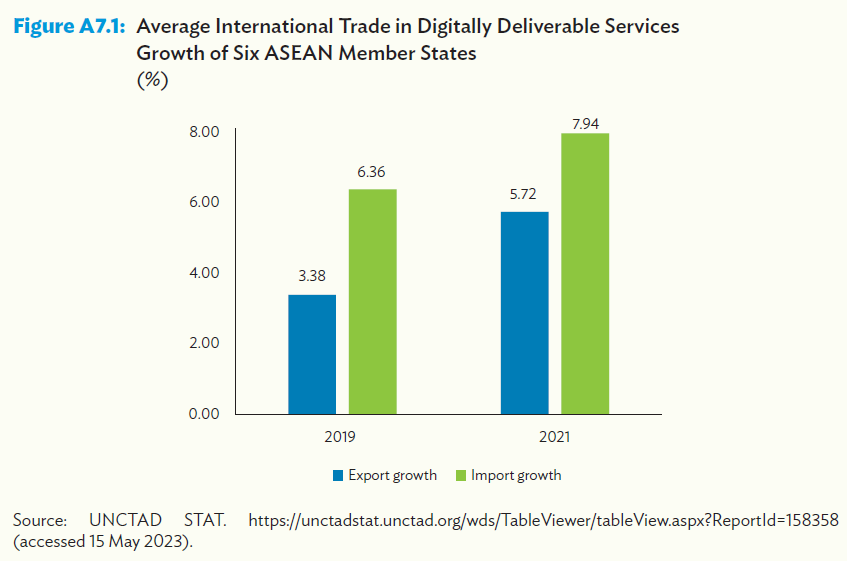
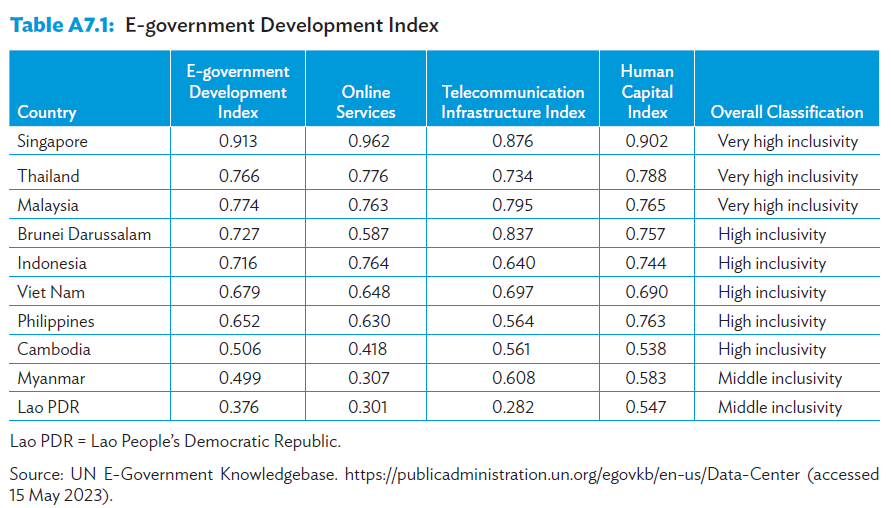
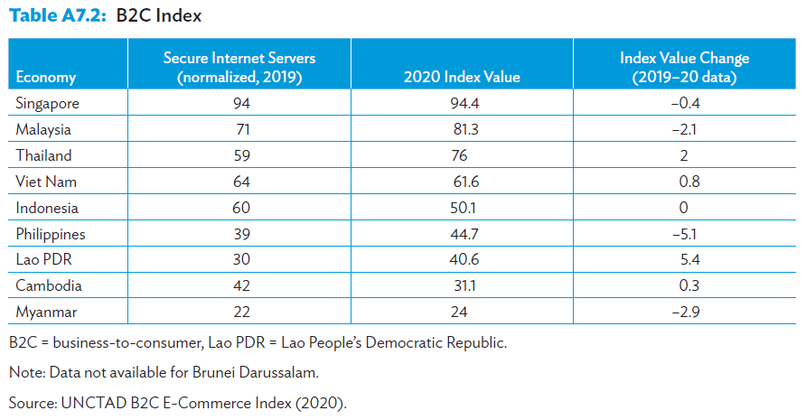
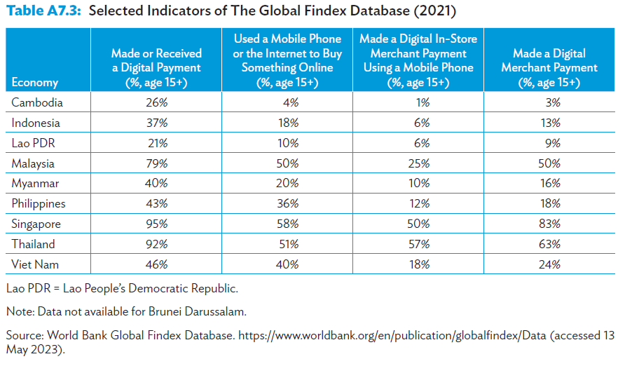
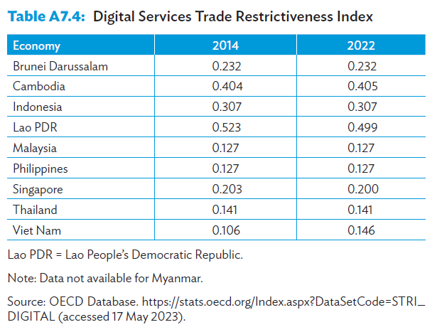
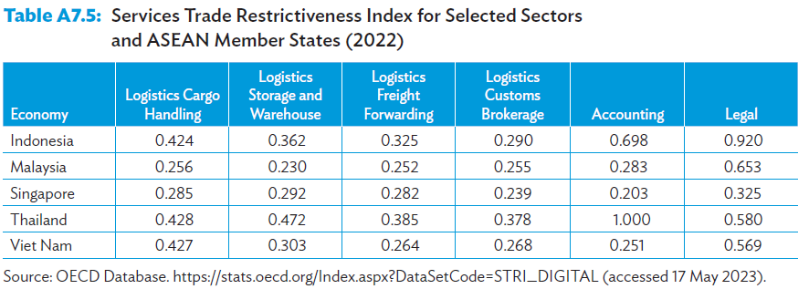

The ASEAN digital economy
Meeting 10
2024-05-05
Digital services
Perpres 44 2016 removes e-commerce from negative investment list.
15 – 20 % of total FDI are in e-commerce, according to BKPM (tirto.id, 2019)
As the growth of online consumers increases (60-70% annually), FDI to this sector will only grow faster.
e-commerce-related import of goods grows 9% annually
With more sophisticated shipment, import facilitation (e.g. Lazada), and payment options, foreign firms may be better off selling from home instead of doing FDI.
Digital services
digitally delivered trade as international transactions electronically delivered remotely through computer networks, including insurance and financial services, professional services, sales and marketing, research and development, and education services (UNCTAD 2022)
Digital economy improves SME’s productivity (see Falentina et al for a discussion and evidence in Yogyakarta), which accounts for >90% of total enterprise in ASEAN (99.99% in IDN)
ASEAN digital trade
The ASEAN digital economy is overgrowing, with the market size expected to exceed $360 billion by 2025 and grow to $1 trillion by 2030 due to the growth in e-commerce, digital financial services, and food delivery.
The digital platform business alone has created 160,000 direct jobs and an additional 30 million indirect jobs.
The e-commerce industry thrives, with 20–25 million unique merchants operating across marketplaces, direct-to-consumer, and grocery platforms.
Digital ASEAN
COVID-19 pandemic forced people to be digitally savvy.
ASEAN’s digital trade jumped from $102 Billion to $194 Billion
The region is working towards establishing proper digital ID
Digital ASEAN
Fast growing digital trade amid COVID-19
Verico & Natanael 2024
3 main drivers
Demand & supply: Increasingly digital consumers: 63.7% social media penetration, 10 hr/day average time spent online, increasing ICT investment,
Payment: Quick Response (QR) for cross-border financial services currently implemented in Vietnam, Indonesia, Malaysia, Singapore, and Cambodia. QR is important to MSMEs in particular.
Large MSMEs: digitalization is important for MSME in the region, which is large in numbers. Connect with the ASEAN supply chain and go formal.
Challenges
Readiness in the region is varied, more investment is needed.
Verico & Natanael 2024
Digital skills
low digital skill with limited initial exposure to digital tools during the pandemic did not experience the benefits of digitalization (WEF 2021).
The digital skills and talent in ASEAN had the lowest score of 48.21 among the six pillars of the ASEAN digital integration index 2021.
As a result, MSMEs have a high demand to improve digital literacy, provide digital skills training for MSME employees, and enhance the accessibility of quality internet and digital devices (WEF 2021).
The concentration of digital tool learners and teachers in big cities leaves small towns and rural areas at risk of being left behind in digitalization.
Security
not all equally well equipped to deal with the privacy and security challenges.
Verico & Natanael 2024
Payment
Digital payment is still low in some countries.
Verico & Natanael 2024
Restrictiveness
Digital service restrictiveness is relatively low…
Verico & Natanael 2024
Restrictiveness
In some services, they are pretty high.
Logistics remains an important hurdle in globalization.
Verico & Natanael 2024
Prescription
It is clear there are challenges to pursue a quick and inclusive growth in the digital economy.
There exists frameworks that act as a guide for ASEAM member states (AMS) to pursue.
These guides focus on standardizing best practices, inclusivity and human capital development.
These frameworks are not binding though so be mindful.
Blueprint
The ASEAN Digital Integration Framework and its Action Plan serves as a comprehensive blueprint for digital integration efforts, covering areas such as trade facilitation, data flows, electronic payments, entrepreneurship, and talent.
The Bandar Seri Begawan Roadmap, issued in 2021, focuses on accelerating ASEAN’s economic recovery and digital economy integration in response to the challenges posed by the COVID-19 pandemic.
the Masterplan on ASEAN Connectivity 2025 recognizes the importance of backbone infrastructure, regulatory frameworks for new digital services, sharing best practices on open data, and equipping MSMEs with the necessary capabilities to leverage new technologies and enhance digital connectivity.
Frameworks
The ASEAN Data Management Framework guides businesses in establishing effective data management systems that include data governance structures and safeguards
the Model of Contractual Clauses offer standardized contractual terms and conditions that can be integrated into legally binding agreements when businesses transfer personal data across borders.
Helps streamline negotiations, reduce compliance costs and time that particularly benefit small and medium-sized enterprises (SMEs), and ensure personal data protection during cross-border transfers.
The ASEAN framework on Digital Data Governance establishes regulatory guidelines to facilitate the free flow of data within the region while upholding necessary data protections during transfers.
Frameworks
The ASEAN Work Programme on Electronic Commerce addresses various aspects of digital trade, including consumer protection, the security of electronic transactions, and payment systems.
the ASEAN Digital Masterplan 2025 offers a comprehensive roadmap for ASEAN member states to improve their citizens’ participation in the digital economy, particularly on inclusivity and digital skills.
ASEAN single window (ASW) allows electronic shipment data exchanges among AMS’ customs.
note that ACDD (ASEAN Customs Declaration Document) is adopted slowly.
Countries’ iniciatives
Thailand industry 4.0 focuses on infrastructures e.g., constructing a broadband network for all villages
Singapore emphasizes digital economy agreements to support businesses, particularly SMEs, in digital trade.
IDN’s Minister of Trade Regulation No. 50/2020 requires business license & local presence for e-commerce (mode 3).
IDN also focuses on infrastructure and digital skills through scholarships and academies.
Recommendations
Make standardizations such as data sharing platform and contracts a more binding one.
Harmonize digital payment (e.g., using a well-established QR system)
Help MSMEs helps digitalization more generally.
More aggresive digital skills initiatives.
Closing
Ititatives such as these frameworks will help not only digital economy but also ASEAN integration in general.
Countries vary in their adoption rate but the successful one is still going to be the early adopters.
Next week we look at the ASEAN green transition.